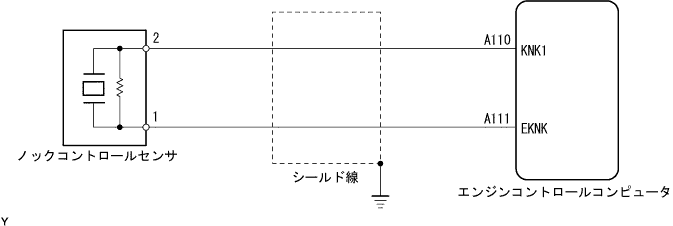
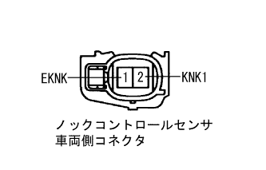
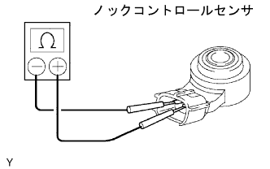
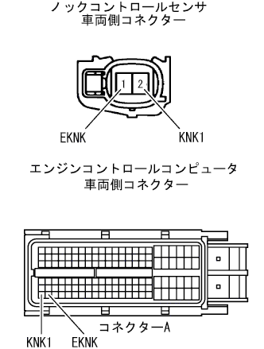

DTC P0327/52 Knock Sensor Circuit 1 (Low) |
DTC P0328/52 Knock Sensor 1 Circuit (High) |
| DTC No. SAE/TCCS | DTC Detection Conditions 1. Diagnosis conditions 2. Malfunction status 3. Malfunction duration 4. Other | Inspection Area |
|---|---|---|
| P0327/52 |
|
|
| P0328/52 |
|
|

| Step 1 | Read TaSCAN Data (Knock Control Value) |
Apply the parking brake and chock the wheels.
Connect SST (TaSCAN) to DLC3.
Start the engine and warm it up.
Select the data monitor item [Knock Control Value] from [Diagnosis Function Menu] → [ECU Data Monitor].
Check the change in the data monitor [Knock Control Value] when the engine operating condition is changed.
| Monitor Item | Normal | Malfunction (DTC detected) |
|---|---|---|
| Knock Control Value | -3.0 to 2.0°CA | Does not change |
|
| ||||
| OK | ||
| ||
| Step 2 | Inspect Wire Harness and Connector (KNK1 Terminal Voltage) |
Reference |
Disconnect the knock control sensor connector.
Using SST (Toyota electrical tester), measure the voltage of the knock control sensor terminal.
| Tester Connection (Terminal Name) | Condition | Standard |
|---|---|---|
| 2 (KNK1) - Body ground | IG ON | 4.5 to 5.5 V |
Using SST (Toyota electrical tester), measure the resistance of the knock control sensor terminal.
| Tester Connection (Terminal Name) | Condition | Standard |
|---|---|---|
| 1 (EKNK) - Body ground | Always | Below 1 Ω |
|
| ||||
| OK | |
| Step 3 | Inspect Knock Control Sensor |
 |
Resistance Inspection
Using SST (Toyota electrical tester), measure the resistance between the connector terminals.
| Tester Connection | Condition | Standard |
|---|---|---|
| 1-2 | 20°C | 120 to 280kΩ |
|
| ||||
| OK | ||
| ||
| Step 4 | Inspect Wire Harness and Connector (Knock Control Sensor - Engine Control Computer) |
Reference |
Disconnect connector A of the engine control computer and the knock control sensor connector.
Using SST (Toyota electrical tester), measure the resistance between the terminals of the engine control computer and the knock control sensor vehicle side connector. (For Terminals of ECU, see)
| Tester Connection (Terminal Name) | Condition | Standard |
|---|---|---|
| A110(KNK1) - 2(KNK1) | Always | Below 1 Ω |
| A111(EKNK) - 1(EKNK) | Always | Below 1 Ω |
| A110 (KNK1) and 2 (KNK1) - Body ground | Always | 10k Ω or higher |
| A111 (EKNK) and 1 (EKNK) - Body ground | Always | 10k Ω or higher |
|
| ||||
| OK | ||
| ||